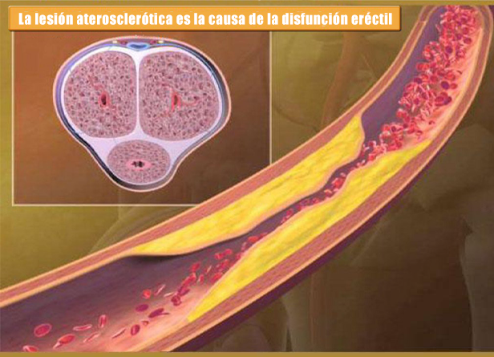
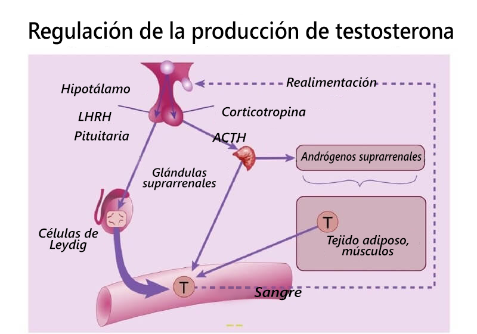
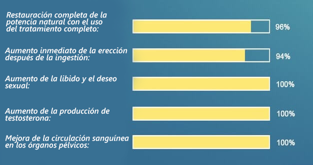
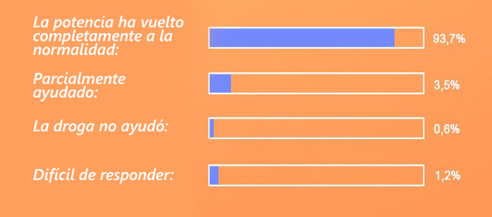

Potencia de roca incluso después de 70 años: el Centro Internacional de Andrología comenzó a suministrar un nuevo remedio eficaz * para restaurar la potencia.
*Los estudios han demostrado que este remedio es 3-4 veces más efectivo que los estimulantes sintéticos.
Cómo puede obtener un producto con envío en Europa, lea el artículo.
En la primavera de 2013, sucedió lo increíble en el congreso anual del Centro Internacional de Andrología. Toda la audiencia se puso de pie durante 10 minutos y aplaudió al científico que estaba en el podio. Este científico era el profesor español Dario Candellero, uno de los mejores urólogos de su tiempo. Después de graduarse de la universidad, Dario se mudó a los Estados Unidos y recibió el título de profesor allí. Fue él y un grupo de científicos quienes crearon un fármaco único que puede aliviar completamente a los hombres de los problemas de potencia al producir hormonas luteinizantes y estimulantes de los folículos que afectan la glándula pituitaria.
 Dario Candellero
(1936-2013)
Dario Candellero
(1936-2013)
Cirujano-urólogo destacado, doctor en ciencias médicas, profesor, inventor de un fármaco único para restaurar la potencia, falleció inmediatamente después de su triunfo, en 2013
Sin embargo, la repentina muerte del científico no le dio la oportunidad de lanzar el producto a la producción. Esto lo hicieron sus seguidores de EE. UU. Solo 8 años después. En 2021, el nuevo medicamento pasó los ensayos clínicos necesarios, cuyos resultados demostraron una vez más su alta eficiencia: ayuda a 96 de cada 100 hombres a restaurar completamente la potencia incluso a una edad avanzada.
Debido al hecho de que este desarrollo provocó protestas públicas, el congreso creó una fundación benéfica que lleva el nombre de D. Candellero. La principal tarea de la fundación es ayudar a las personas que enfrentan problemas de erección, dentro del programa cualquier hombre que viva en Europa puede obtener el producto desarrollado por Candellero, a un precio especial!
El 73% de los hombres se vuelven impotentes a la edad de 40 años, ¡esto es un peligro de deterioro de la potencia!
El hecho de que los problemas de potencia lleguen a los hombres a una edad más temprana que antes, los médicos ya han estado hablando sobre los últimos diez años al menos. Las razones de la extinción temprana de las oportunidades sexuales son bien conocidas por todos: un estilo de vida sedentario, mal hábitos, mala alimentación, mala ecología, etc.
Sin embargo, pocas personas piensan en qué problemas en la vida de un hombre pueden conducir a problemas en la esfera sexual.

Con una ausencia prolongada de potencia, los vasos del pene se llenan de placas ateroscleróticas, lo que finalmente conduce al desarrollo de una impotencia completa.
Etapas de desarrollo de la impotencia y sus consecuencias:
Etapa 1: la potencia desaparece ocasionalmente, por ejemplo, después de beber alcohol o por sí sola. A veces, el "estado de ánimo para tener relaciones sexuales" está ausente. La mayoría de la gente atribuye esto al trabajo duro, al estrés, etc. Sin embargo, esta ya es la primera señal de que solo empeorará con el tiempo.
Etapa 2: la potencia desaparece cada vez con más frecuencia. Incluso cuando la hay, no es tan potente como antes. El miembro puede caerse durante las relaciones sexuales o al ponerse un condón. Como regla general, una persona durante este período comienza a pensar en el problema, pero está limitada solo por el hecho de que a veces toma estimulantes sintéticos.
Etapa 3: la potencia aparece con poca frecuencia. La libido cae bruscamente. Un hombre se vuelve irritable, la fuerza y el deseo de hacer algo desaparecen. Comienzan los problemas familiares: juramentos frecuentes en la familia, infidelidad femenina, el asunto puede llegar a un divorcio.
Etapa 4: impotencia total. Incluso los estimulantes no ayudan. Hasta el 91% de los hombres en esta etapa se sienten solos; las mujeres rara vez viven con personas impotentes y, si lo hacen, sufren. Se desarrolla depresión, así como diversas dolencias físicas. Nuestro cuerpo está diseñado para que su función principal sea la reproducción. Tan pronto como lo pierde, el cuerpo comienza a deteriorarse muy rápidamente.
En ausencia de potencia durante mucho tiempo, el suministro de sangre a los órganos pélvicos desaparece, lo que conduce al desarrollo de numerosas enfermedades peligrosas.
Fotos del fondo del Centro Internacional de Andrología. Hay una tragedia personal detrás de cada fotografía. ¡Imagenes sensibles!
Cáncer de próstata en un hombre de 48 años. El cáncer de próstata es la causa más común de muerte (hasta un 88%) en los hombres que padecen impotencia. Aparece debido a la falta de circulación sanguínea normal en los órganos pélvicos y la congestión purulenta en la propia próstata

Gangrena (muerte) del pene en un hombre de 44 años debido a unaprolongada falta de potencia. Tuve que hacer una operación urgente, pero hubo una intoxicación sanguínea severa, el hombre no pudo salvarse.
Piedras en los riñones. La enfermedad de cálculos renales también se desarrolla debido a un deterioro en el suministro de sangre a los órganos pélvicos. Una enfermedad muy dolorosa que a menudo requiere una intervención quirúrgica urgente para extraer cálculos o el propio riñón.

Debido al hecho de que la potencia puede desaparecer por completo, muchos hombres intentan deshacerse de los problemas de potencia tan pronto como comienzan a aparecer. Sin embargo, hasta hace poco, era imposible restaurar completamente la potencia: los medicamentos disponibles (por ejemplo, estimulantes ) mejoraban la potencia SOLO POR UN TIEMPO DETEMINADO.
Un fármaco único creado por científicos estadounidenses bajo el liderazgo de Dario Candellero ayuda a RETORNAR EL POTENCIAL COMPLETAMENTE NATURAL, es decir, se restaura por sí misma (como en los hombres sanos) sin tomar estimulantes.
Le pedimos al doctor en ciencias médicas, al profesor, jefe del departamento de urología del instituto de investigación, que nos informara sobre el nuevo fármaco, que se llama PX-300
«Fue el desarrollo más difícil, pero el más necesario en el campo de la urología»

Esteban Edul cuenta por qué desaparece la potencia y cómo restaurarla
Corresponsal: Esteban, ¿podría simplemente decirnos por qué disminuye la potencia y cómo se puede detener este proceso?
Esteban Edul: Mira, el trabajo principal de cada individuo es reproducirse. Todo es inherente a una persona para que este proceso se desarrolle sin interrupciones. Cada hombre tiene condicionalmente 3 períodos. Cuando crece, cuando puede reproducirse y cuando se desvanece. El cuerpo entiende qué período es ahora por el nivel de testosterona en la sangre. Es máximo durante el período de la capacidad de reproducción: más de 11 nmol / l. Con la edad (después de los 45 años), disminuye: el hombre pasa a la tercera etapa. Esto debería suceder en condiciones normales; de hecho, es un proceso natural.
Sin embargo, el estilo de vida moderno y, lo que es más importante, el hecho de que hoy en día los hombres se muevan muy poco, llevan al hecho de que los niveles de testosterona comienzan a disminuir anormalmente antes de su tiempo. Después de 30 años, su nivel en el 93% de los hombres examinados por nosotros promedia 5 nmol / l, ¡que es 2 veces más bajo que la norma! Naturalmente, esto conduce a problemas de potencia y, naturalmente, las llagas que se producen en ausencia de un suministro normal de sangre a los órganos pélvicos aparecen mucho antes.
Corresponsal: ¿Cómo puede PX-300 ayudar a los hombres?
Esteban Edul: Es importante comprender que PX-300 no es una droga estimulante. Está dirigido a otra cosa, a saber, a la activación de la producción de testosterona por parte del cuerpo, y no a la vasodilatación anormal y generalmente peligrosa para el sistema circulatorio en la ingle, como lo hacen, por ejemplo, los productos químicos.
Los principios activos que contiene PX-300 contribuyen a la producción activa de hormonas luteinizantes y estimulantes del folículo, que a su vez actúan sobre la glándula pituitaria. Y ya la glándula pituitaria contribuye a la producción de la hormona testosterona.
PX-300 tiene un efecto complejo en el cuerpo. No quiero entrar en detalles sobre las reacciones químicas que tienen lugar en el cuerpo, porque de todos modos muy pocas personas las entenderán. Solo quiero señalar que PX-300 simultáneamente mejora la erección inmediatamente después de tomarlo y ayuda a restaurar la función de la glándula pituitaria, es decir, restaura la potencia natural que aparece por sí sola sin ningún medicamento. Incluidas las personas mayores de 50-60 años. Usando PX-300 puede tener una potencia estable incluso en la vejez.
La testosterona en sí es extremadamente útil para un hombre; después de todo, es su falta lo que conduce al envejecimiento del cuerpo y al desarrollo de una variedad de enfermedades. Los andrólogos más experimentados prescriben testosterona a hombres mayores de 50 años.

El proceso de producción de testosterona por las células de Leydig, la "señal" para la producción es dada por la glándula pituitaria, que se ve afectada por PX-300.
Corresponsal: Normalizar la producción de testosterona es una solución muy simple, ¿no? ¿No se pensó antes?
Esteban Edul: La solucion es simple. Sin embargo, no es tan fácil influir en este proceso. Dario Candellero descubrió una sustancia que es capaz de afectar indirectamente a la glándula pituitaria. Todo este tiempo hemos estado creando un fármaco basado en él. Hasta la fecha, PX-300 es el único remedio que combate con tanta eficacia la impotencia sexual masculina. Los estimulantes ni siquiera estaban cerca. También es importante que PX-300 no tenga efectos secundarios. Absolutamente. Eso también lo distingue favorablemente entre los fondos que contienen sildenafil.
Corresponsal: Por favor, dígame que PX-300 ha sido probado clínicamente. ¿Qué mostraron?
Esteban Edul: Se han realizado ensayos clínicos más de una vez. Y cada vez mostraron resultados asombrosos.
Les mostraré los resultados de los últimos ensayos clínicos llevados a cabo en el otoño de 2017 en el centro científico de urología. En total, participaron en ellos unos 200 hombres con problemas de potencia de diversa gravedad
Resultados del ensayo clínico PX-300:

Además, en el sitio web del Instituto de Investigación en Urología, se ha realizado una encuesta durante 7 meses entre quienes han usado PX-300 para combatir la impotencia. La única pregunta suena así: "¿ PX-300 te ayudó en la lucha contra la impotencia?" 5478 personas ya han votado. Puede ver los resultados de la encuesta usted mismo.
Encuesta del Instituto de Investigaciones en Urología
sobre los resultados del uso de PX-300:

Corresponsal: ¿Es cierto que bajo el programa actual, cualquier hombre puede obtener PX-300 con un descuento significativo?
Esteban Edul: Sí, eso es cierto. Ahora, el Instituto de Investigación de Urología, en el marco del programa "Salud Masculina", distribuye PX-300 a un precio especial reducido en Europa.
Mi opinión personal es que esta es una iniciativa muy importante y correcta, ya que los problemas de potencia aparecen cada vez con más frecuencia en los hombres, y muchas veces conducen a la destrucción de familias, así como a la pérdida de la salud por parte de un hombre. Creo que este producto salvará a muchas familias y también reducirá la cantidad de drogas estimulantes que toman los hombres, como los estimulantes sintéticos, que hacen más daño que bien
Corresponsal: ¿Cómo convertirse en miembro del programa y obtener PX-300? ¿Qué necesita para esto?
Esteban Edul: Todo es bastante fácil, aquí hay 3 condiciones que se requieren para participar en el programa:
- 1. Estar en Europa.
- 2. Complete el formulario de pedido oficial
- 3. Pague el producto después de la entrega.
¡Atención! ÚLTIMO DÍA DE RECEPCIÓN DE SOLICITUDES PARA PX-300 - inclusive. Después de eso, ¡el medicamento solo se puede comprar a precio de mercado!

78 euro 39 euro
Hasta el final de la promoción queda:
- - : - - : - -
 Marina Maldonado
Marina Maldonado
 Juan
Juan
 Veronica
Veronica
 Ignacio Fuentes
Ignacio Fuentes
 Silvia
Silvia
 Elisa
Elisa
 Julián Martínez
Julián Martínez
 Andrea Vázquez
Andrea Vázquez
 Laura Aranda
Laura Aranda